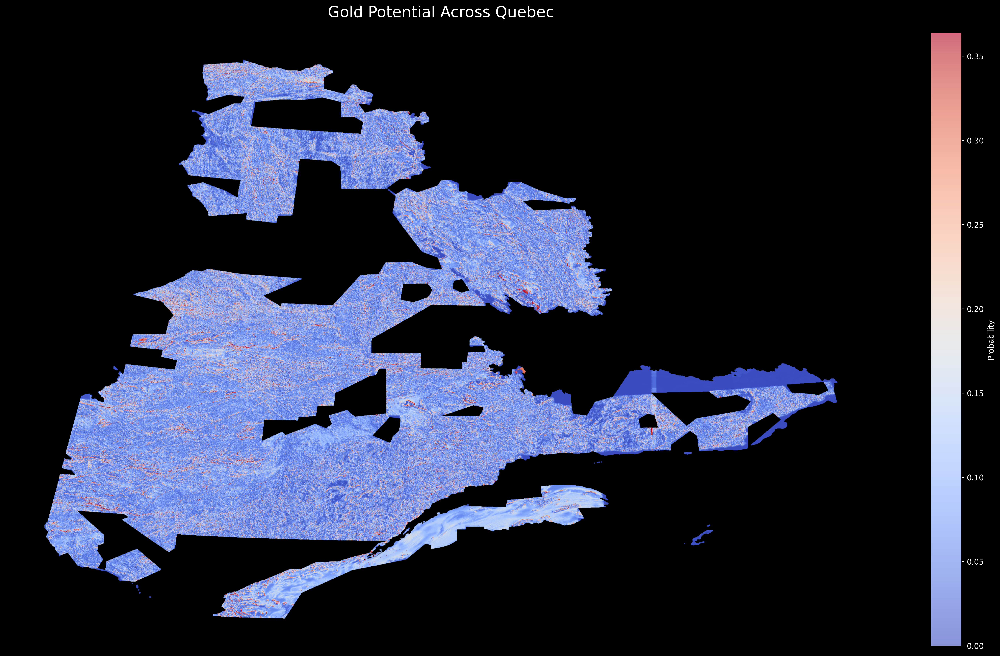

Predicting Quebec's Mineral Deposits with AI

Project Overview
An innovative approach to mineral exploration in Quebec using deep learning and geospatial analysis. This project combines magnetic imagery with geological data to predict high-potential areas for various mineral deposits including Au, Ag, Cu, Co, and Ni.
Key Features
- Interactive map visualization of mineral potential
- Deep learning model for deposit prediction
- Integration of multiple geological data sources
- Real-time prediction capabilities
Interactive Map
Explore mineral potential predictions across Quebec using the interactive map below. Toggle between different mineral layers and click regions for detailed analysis.
Technical Details
Methodology
- Deep learning architecture for geospatial analysis
- Integration of magnetic survey data
- Geological feature engineering
- Model validation and testing
Project Status
This project is currently in development. Check back soon for the interactive map and detailed analysis.